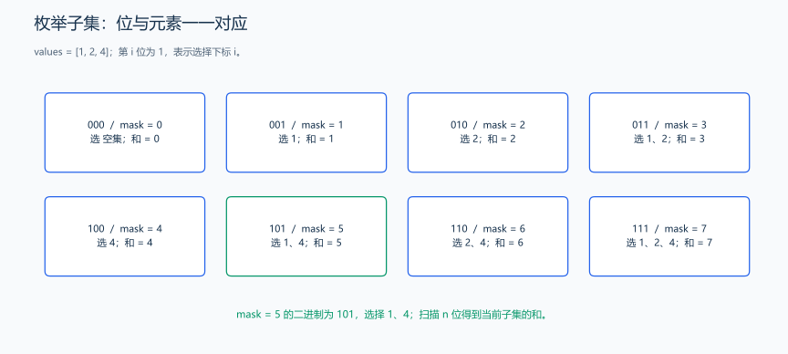
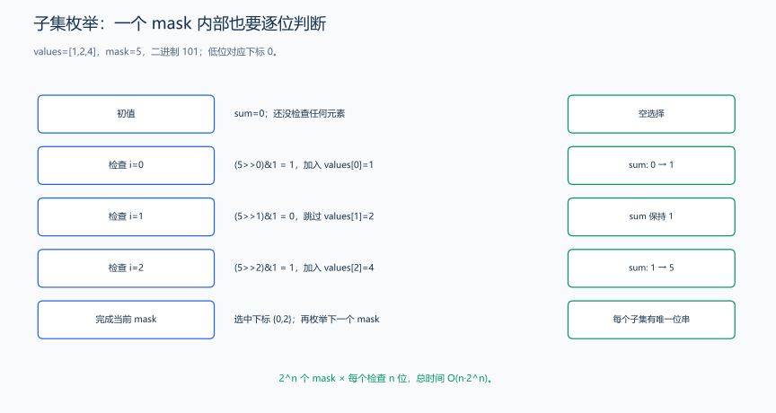

（二） 枚举与模拟
先从能够逐项检查的候选开始写正确解，确认没有漏掉，再计算枚举范围；后面的技巧会围绕这种基准做法减少重复工作。
枚举是把可能的情况依次检查；模拟是按题目规则直接执行过程。它们是构造解法和验证复杂算法的起点。
1. 枚举数对
题目原文（自拟）： 给定整数数组 values 和目标 target，返回两个不同的从 0 开始的下标，使对应元素之和等于目标。任意一组合法下标均可；无解返回 (-1, -1)。数组长度不超过 2000，元素是 int，目标是 long long。
分析： 枚举所有 i < j 的数对，计算和并比较目标。先写最直接的 \(O(n^2)\) 方法：
为什么这样枚举不会漏解？ 任意两个不同下标，总能把较小的记为 i、较大的记为 j，所以它一定落在 i < j 的范围内；反过来，每次枚举出的数对下标确实不同。这样建立了“合法候选与枚举范围”的对应关系。
对 [3,1,5]、目标 6，依次检查 (0,1) 的和 4、(0,2) 的和 8、(1,2) 的和 6，此时返回即可，因为题目只要求任意一组。若题目改成“有多少对”或“输出全部数对”，就不能第一次找到后直接返回。最坏情况下无解，需要检查全部 \(n(n-1)/2\) 对。

按 j>i 枚举不同位置，不会遗漏无序数对。
#include <utility>
#include <vector>
using namespace std;
pair<int, int> twoSumBrute(const vector<int> &values, long long target) {
int n = static_cast<int>(values.size());
for (int i = 0; i < n; ++i) {
for (int j = i + 1; j < n; ++j) {
// j 从 i 后面开始，保证下标不同；先提升类型再相加。
if (1LL * values[i] + values[j] == target) {
return {i, j};
}
}
}
return {-1, -1};
}j 从 i + 1 开始，保证不重复使用同一个元素，也不重复检查 (i, j) 与 (j, i)。数组有序时，可以使用后面的双指针降到 \(O(n)\)；无序数组也可用哈希记录已经出现的数。
样例与解释： values = [3, 1, 5]、target = 6，返回 (1, 2)；values = [3]、target = 6 无解，同一个元素不能使用两次。额外空间为 \(O(1)\)。
2. 枚举子集
题目原文（自拟）： 给定不超过 20 个整数，每个位置最多选择一次，输出所有子集的元素和，包含空集；按子集的二进制编号递增输出。所有求和结果在 long long 范围内。下面用 [1, 2, 4] 演示。
分析： 用二进制的一位表示“是否选择对应元素”，位置 i 对应第 i 位。

每个位置对应一位，重复数值也仍是不同位置；空集的编号和元素和都是 0。

以 [1,2,4]、mask=5 为例，二进制为 101，最低位对应位置 0。检查第 0 位为 1，加入 1；第 1 位为 0，跳过 2；第 2 位为 1，加入 4，最终和为 5。图中的“选择”来自 mask & (1ULL<<i) 的判断，不是看到某个目标和后反推子集。
把每个决定对应到一位，才知道枚举是否完整。 对长度 n 的数组，每个位置只有选、不选两种决定，合计 2ⁿ 种。范围 0 <= mask < 2ⁿ 恰好覆盖所有 n 位二进制串；同一个串与同一组位置一一对应，不会漏掉空集或重复某组位置。
mask & (1u << i) 只保留第 i 位：结果非零就选择 values[i]。例如 mask=5 对应二进制 101，从低位起分别为选、不选、选，因此取第 0、2 个元素。即使两个元素数值相同，不同位置仍代表不同选择；若题目要求按数值去重，不能直接把位置枚举的个数当成答案。
#include <iostream>
#include <vector>
using namespace std;
vector<int> values{1, 2, 4};
int n = static_cast<int>(values.size());
for (unsigned int mask = 0; mask < (1u << n); ++mask) {
long long sum = 0;
for (int i = 0; i < n; ++i) {
if ((mask & (1u << i)) != 0) {
sum += values[i];
}
}
cout << sum << ' '; // 空集编号为 0，和也为 0。
}
cout << '\n';共有 \(2^n\) 个子集，上面每个子集再扫描 n 位，总时间为 \(O(n2^n)\)。模拟题则先明确状态，例如当前位置、方向、时间，再严格按照规则更新。
样例与解释： 输出 0 1 2 3 4 5 6 7。编号 5 = (101)₂ 选择第 0、2 个元素，和为 1 + 4 = 5。本片段放入 main 中运行。